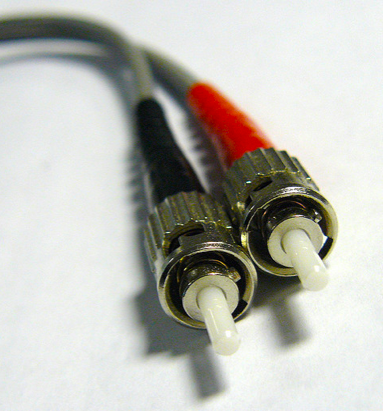

HomeWork <<
Previous Next >> PCH 11 Twisted Pair Cable
PCH 11 Fiber-Optic-Cable(光纖電纜)
learning objectives/學習目標
Identify types of network cables and connectors.
識別網絡電纜和連接器的類型。
overview/概觀
In this module, we’re going to discuss the various types of network media. We will begin with fiber-optic cable and then discuss twisted pair cable and coaxial cable. For each of these cable types, we will discuss appearance, characteristics, and types of connectors, as well as speed and limitations.
在本模塊中，我們將會討論到各種類型的網絡媒體。我們將會從光纖電纜開始，然後討論雙絞線電纜和同軸電纜。對於每種電纜的類型，我們將會討論連接器的外觀，特性和類型，以及速度和限制。
Fiber-Optic-Cable(光纖電纜)

Fiber-optic cables are constructed by using a glass core at the center of the cable that is surrounded by cladding. In order to send data from one end of the cable to the other, light from a light-emitting diode (LED) or laser is used to transmit the signal down the glass fiber at the center of the cable. Because the data is being transmitted using light, it is immune to the effects of electromagnetic interference (EMI) that impact traditional copper-based cables, such as twisted pair and coaxial cables. Fiber-optic cables possess the ability to send the data a very far distance (many miles) without the use of a repeater. They also can carry a significant amount of data due to their large bandwidth and the information traveling at light speed. Their bandwidth can be measured in gigabits or even terabits per second. There are two types of fiber cables: multimode and single-mode fiber.
光纖電纜是通過在電纜的中心使用玻璃芯製成的，該玻璃芯被層層圍繞。
為了將數據從電纜的一端發送到另一端，使用來自發光二極管（LED）或是使使用雷射的光線沿電纜中心的玻璃纖維向下傳輸信號。
由於數據是通過光傳輸的，因此不受電磁干擾（EMI）的影響，這些電磁干擾會影響傳統的銅基電纜，如雙絞線和同軸電纜。
光纖有無需使用中繼器就可傳輸到很遠的距離（許多英里）發送數據的能力。由於它們的大帶寬和以光速傳播的信息，此外它們還可以攜帶大量數據。
它們的帶寬可以以每秒1GB甚至是1TB的速度來測量。而光纖電纜有兩種類型：多模光纖與單模光纖。
(多模光纜):
Multimode fiber cables (MMF) contain a larger core than the single-mode variety. The core size for
a multimode fiber is 62.5 microns. A micron is a very small unit of measurement—it is actually even
smaller than the width of a human hair. MMF’s larger core enables multiple modes of travel for the light
from one end of the cable to the other. This allows a single fiber to carry multiple signals across it, with
each signal being transmitted at a slightly different reflective angle. When the light reaches the destination,
the signals are then converted back into 1s and 0s and passed to the computer by the network interface card.
Multimode fiber is commonly used in shorter distance fiber connections, such as from a router to a switch, a
switch to a switch, or a server to a switch
多模光纜（MMF）的芯線比單模光纜大。多模光纖的纖芯尺寸為62.5微米。微米是非常小的測量單位，實際上甚至比人類頭髮的寬度還小。
MMF的較大的芯線實現了從電纜一端到另一端的多種傳播模式。這樣一來，單根光纖就可以在其上傳輸多個信號，而每個信號的反射角度都會稍有不同。
當光到達目的地時，信號會被轉換回1和0，然後通過網絡接口卡傳遞到電腦中。
多模光纖通常用於較短距離的光纖連接中，例如從路由器到交換機，從交換器到交換器或從服務器到交換器。
(單模光纜):
Single-mode fiber cables (SMF) contain a much smaller core than the multimode variety. The core size for SMF
is 10 microns. SMF’s smaller core only allows for a single mode of travel for the light from one end of the
cable to the other. This straight-through connection allows for data to travel longer distances without a repeater
than it can travel using MMF. When the light reaches the destination, the signals are then converted back into 1s
and 0s and passed to the computer by the network interface card. Single mode fiber is commonly used in very long distance
fiber connections, such as a backbone connection from one local area network to another.
單模光纜（SMF）的芯線比多模光纜小得多。SMF的芯尺寸為10微米。SMF的較小芯線僅允許光從電纜一端到另一端的單一傳播模式。
這種直通連接允許數據在沒有中繼器的情況下傳輸更長的距離，而無法使用MMF進行傳輸。當光到達目的地時，然後信號被轉換回1和0，
然後通過網絡接口卡傳遞到電腦。單模光纖通常用於超長距離的光纖連接中，例如從一個局域網到另一個局域網的骨干連接。
Fiber-Optic Cable Connectors(光纖電纜連接器)
Fiber cables only come in the two types discussed above: single-mode and
multimode. However, the ends of each of these cables come in four varieties.
光纖電纜僅屬於上述兩種類型：單模和多模。然而，每條電纜的末端都有四種種類。
The subscriber connector (SC) is a fiber-optic cable connector that uses a push-pull mechanism to latch into
the port, similar to common audio and video cables. If you want to enable bidirectional transmission for sending
and receiving data, you need to have two fiber cables, so sometimes a dual SC connector is used.
用戶連接器（SC）是一種光纖電纜連接器，類似於普通的音頻和影片電纜，它使用推挽機制鎖入端口。
如果要啟用雙向傳輸以發送和接收數據，則需要兩條光纖電纜，因此有時會使用雙SC連接器。
The straight tip (ST) connector is a fiber-optic cable connector that uses a bayonet plug and socket.
It was the first de facto standard connector for most commercial wiring using fiber cables and it is very
commonly found in fiber networks.
筆直型（ST）連接器是使用卡口插頭和插座的光纖電纜連接器。它是大多數使用光纖電纜進行商業佈線的第一個實際使用的標準連接器，
並且在光纖網絡中非常常見。
The Lucent connector (LC) is a miniaturized version of the fiber-optic SC connector. It looks somewhat like the SC,
but is half the size, with a 1.25 mm ferrule instead of 2.5 mm, making it very useful when connecting multiple devices in a small area,
such as on a 24-port switch’s front panel.
朗訊連接器（LC）是光纖SC連接器的微型版本。它看上去有點像SC，但尺寸只有一半，只有1.25毫米而不是2.5毫米的芯,因此在小區域（例如使用24端口交換機的前面板）連接多個設備時非常有用。
The mechanical transfer-registered jack (MT-RJ) connector is a fiber-optic cable connector that is very popular for small-form-factor
devices due to its small size. This connector houses two fibers and mates with locating pins on the plug. These connectors are commonly
found connecting a switch to a patch panel, because both devices have a limited area on their front panels.
機械傳輸註冊插孔（MT-RJ）連接器是一種光纖電纜連接器，由於其尺寸小，在小型設備中非常受歡迎。該連接器容納兩根光纖，並與插頭上的定位銷配對。通常這些連接器會將開關連接到配線架，因為兩個設備的前面板都有有限的區域。
HomeWork <<
Previous Next >> PCH 11 Twisted Pair Cable